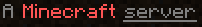

Server Configuration
By default, the server configuration will be created and set based on the following environment variables, but only the first time the server is started. If the server.properties file already exists, the values in them will not be changed.
If you prefer to manually manage the server.properties file, set OVERRIDE_SERVER_PROPERTIES to "false". Similarly, you can entirely skip the startup script's creation of server.properties by setting SKIP_SERVER_PROPERTIES to "true".
NOTE: to clear a server property, set the variable to an empty string, such as
-e RESOURCE_PACK="". A variables that maps to a server property that is unset, is ignored and the existingserver.propertyis left unchanged.
Message of the Day
The message of the day, shown below each server entry in the client UI, can be changed with the MOTD environment variable, such as
-e MOTD="My Server"
If you leave it off, a default is computed from the server type and version, such as
A Paper Minecraft Server powered by Docker
That way you can easily differentiate between several servers you may have started.
The section symbol (§) and other unicode characters are automatically converted to allow formatting codes to be used consistently with all server versions. For example,
-e MOTD="A §l§cMinecraft§r §nserver"
renders

To produce a multi-line MOTD, you will need to double escape the newline such as
-e MOTD="Line one\\nLine two"
Difficulty
The difficulty level (default: easy) can be set like:
Valid values are: peaceful, easy, normal, and hard, and an
error message will be output in the logs if it's not one of these
values.
Whitelist Players
Note
It is very important to set this with servers exposed to the internet where you want only limited players to join.
To whitelist players for your Minecraft server, you can:
- Provide a list of usernames and/or UUIDs separated by commas via the
WHITELISTenvironment variable
docker run -d -e WHITELIST=user1,uuid2 ... - Provide the url or path to a whitelist file via
WHITELIST_FILEenvironment variable
docker run -d -e WHITELIST_FILE=/extra/whitelist.json ...
When either is set, whitelisting of connecting users is enabled . If managing the list manually, ENABLE_WHITELIST can be set to "true" to set the white-list property.
If whitelist configuration already exists, WHITELIST_FILE will not be retrieved and any usernames in WHITELIST are added to the whitelist configuration. You can enforce regeneration of the whitelist on each server startup by setting OVERRIDE_WHITELIST to "true". This will delete the whitelist file before processing whitelist configuration.
Note
You can provide both WHITELIST_FILE and WHITELIST, which are processed in that order.
Note
UUIDs passed via WHITELIST need to be the dashed variant, otherwise it not be recognised and instead added as a username.
If running Minecraft 1.7.5 or earlier, these variables will apply to white-list.txt, with 1.7.6 implementing support for whitelist.json. Make sure your WHITELIST_FILE is in the appropriate format.
To enforce the whitelist changes immediately when whitelist commands are used , set ENFORCE_WHITELIST to "true".
Op/Administrator Players
Similar to the whitelist, to add users as operators (aka adminstrators) to your Minecraft server, you can:
- Provide te url or path to an ops file via
OPS_FILEenvironment variable
docker run -d -e OPS_FILE=https://config.example.com/extra/ops.json ... - Provide a list of usernames and/or UUIDs separated by commas via the
OPSenvironment variable
docker run -d -e OPS=user1,uuid2 ...
If ops configuration already exists, OPS_FILE will not be retrieved and any usernames in OPS are added to the ops configuration. You can enforce regeneration of the ops configuration on each server startup by setting OVERRIDE_OPS to "true". This will delete the ops file before processing ops configuration.
Note
Similar to whitelists, you can provide both OPS_FILE and OPS, and Minecraft 1.7.5 or earlier will use ops.txt rather than ops.json.
Enable/disable initial selection of datapacks
New to 22W42A, datapacks with feature flags can be controlled before initial world creation by setting these to a comma separated list of packs:
INITIAL_ENABLED_PACKSsuch as "update_1_20,bundle"INITIAL_DISABLED_PACKS
Server icon
A server icon can be configured using the ICON variable. The image will be automatically
downloaded, scaled, and converted from any other image format:
docker run -d -e ICON=http://..../some/image.png ...
The server icon which has been set doesn't get overridden by default. It can be changed and overridden by setting OVERRIDE_ICON to TRUE.
docker run -d -e ICON=http://..../some/other/image.png -e OVERRIDE_ICON=TRUE...
RCON
RCON is enabled by default to allow for graceful shut down the server and coordination of save state during backups. RCON can be disabled by setting ENABLE_RCON to "false".
The default password is "minecraft" but change the password before deploying into production by setting RCON_PASSWORD.
DO NOT MAP THE RCON PORT EXTERNALLY unless you aware of all the consequences and have set a secure password with RCON_PASSWORD.
Info
Mapping ports (-p command line or ports in compose) outside the container and docker networking needs to be a purposeful choice. Most production Docker deployments do not need any of the Minecraft ports mapped externally from the server itself.
By default, the server listens for RCON on port 25575 within the container. It can be changed with RCON_PORT but only do this if you have a very good reason. DO NOT change rcon.port via server.properties or integrations will break.
Query
Enabling this will enable the gamespy query protocol.
By default the query port will be 25565 (UDP) but can easily be changed with the QUERY_PORT variable.
docker run -d -e ENABLE_QUERY=true
Max players
By default max players is 20, you can increase this with the MAX_PLAYERS variable.
docker run -d -e MAX_PLAYERS=50
Max world size
This sets the maximum possible size in blocks, expressed as a radius, that the world border can obtain.
docker run -d -e MAX_WORLD_SIZE=10000
Allow Nether
Allows players to travel to the Nether.
docker run -d -e ALLOW_NETHER=true
Announce Player Achievements
Allows server to announce when a player gets an achievement.
docker run -d -e ANNOUNCE_PLAYER_ACHIEVEMENTS=true
Enable Command Block
Enables command blocks
docker run -d -e ENABLE_COMMAND_BLOCK=true
Force Gamemode
Force players to join in the default game mode.
- false - Players will join in the gamemode they left in.
- true - Players will always join in the default gamemode.
docker run -d -e FORCE_GAMEMODE=false
Generate Structures
Defines whether structures (such as villages) will be generated.
- false - Structures will not be generated in new chunks.
- true - Structures will be generated in new chunks.
docker run -d -e GENERATE_STRUCTURES=true
Hardcore
If set to true, players will be set to spectator mode if they die.
docker run -d -e HARDCORE=false
Snooper
If set to false, the server will not send data to snoop.minecraft.net server.
docker run -d -e SNOOPER_ENABLED=false
Max Build Height
The maximum height in which building is allowed. Terrain may still naturally generate above a low height limit.
docker run -d -e MAX_BUILD_HEIGHT=256
Max Tick Time
The maximum number of milliseconds a single tick may take before the server watchdog stops the server with the message, A single server tick took 60.00 seconds (should be max 0.05); Considering it to be crashed, server will forcibly shutdown. Once this criteria is met, it calls System.exit(1). Setting this to -1 will disable watchdog entirely
docker run -d -e MAX_TICK_TIME=60000
Spawn Animals
Determines if animals will be able to spawn.
docker run -d -e SPAWN_ANIMALS=true
Spawn Monsters
Determines if monsters will be spawned.
docker run -d -e SPAWN_MONSTERS=true
Spawn NPCs
Determines if villagers will be spawned.
docker run -d -e SPAWN_NPCS=true
Set spawn protection
Sets the area that non-ops can not edit (0 to disable)
docker run -d -e SPAWN_PROTECTION=0
View Distance
Sets the amount of world data the server sends the client, measured in chunks in each direction of the player (radius, not diameter). It determines the server-side viewing distance.
docker run -d -e VIEW_DISTANCE=10
Level Seed
If you want to create the Minecraft level with a specific seed, use SEED, such as
-e SEED=1785852800490497919
If using a negative value for the seed, make sure to quote the value such as:
-e SEED="-1785852800490497919"
Game Mode
By default, Minecraft servers are configured to run in Survival mode. You can
change the mode using MODE where you can either provide the standard
numerical values or the
shortcut values:
- creative
- survival
- adventure
- spectator (only for Minecraft 1.8 or later)
For example:
docker run -d -e MODE=creative ...
PVP Mode
By default, servers are created with player-vs-player (PVP) mode enabled. You can disable this with the PVP
environment variable set to false, such as
docker run -d -e PVP=false ...
Level Type and Generator Settings
By default, a standard world is generated with hills, valleys, water, etc. A different level type can
be configured by setting LEVEL_TYPE to an expected type listed here.
For some of the level types, GENERATOR_SETTINGS can be used to further customize the world generation as described here.
Custom Server Resource Pack
You can set a link to a custom resource pack and set it's checksum using the RESOURCE_PACK and RESOURCE_PACK_SHA1 options respectively, the default is blank:
docker run -d -e 'RESOURCE_PACK=http://link.com/to/pack.zip?=1' -e 'RESOURCE_PACK_SHA1=d5db29cd03a2ed055086cef9c31c252b4587d6d0'
You can enforce the resource pack on clients by setting RESOURCE_PACK_ENFORCE to TRUE (default: FALSE).
Level / World Save Name
You can either switch between world saves or run multiple containers with different saves by using the LEVEL option,
where the default is "world":
docker run -d -e LEVEL=bonus ...
NOTE: if running multiple containers be sure to either specify a different
-vhost directory for eachLEVELin use or don't use-vand the container's filesystem will keep things encapsulated.INFO Refer to the data directory section for a visual description of where the
$LEVELdirectory is situated.
Online mode
By default, server checks connecting players against Minecraft's account database. If you want to create an offline server or your server is not connected to the internet, you can disable the server to try connecting to minecraft.net to authenticate players with environment variable ONLINE_MODE, like this
docker run -d -e ONLINE_MODE=FALSE ...
Allow flight
Allows users to use flight on your server while in Survival mode, if they have a mod that provides flight installed.
-e ALLOW_FLIGHT=TRUE|FALSE
Server name
The server name (e.g. for bungeecord) can be set like:
docker run -d -e SERVER_NAME=MyServer ...
Server port
WARNING: only change this value if you know what you're doing. It is only needed when using host networking and it is rare that host networking should be used. Use
-pport mappings instead.
If you must, the server port can be set like:
docker run -d -e SERVER_PORT=25566 ...
however, be sure to change your port mapping accordingly and be prepared for some features to break.
Other server property mappings
| Environment Variable | Server Property |
|---|---|
| PLAYER_IDLE_TIMEOUT | player-idle-timeout |
| BROADCAST_CONSOLE_TO_OPS | broadcast-console-to-ops |
| BROADCAST_RCON_TO_OPS | broadcast-rcon-to-ops |
| ENABLE_JMX | enable-jmx-monitoring |
| SYNC_CHUNK_WRITES | sync-chunk-writes |
| ENABLE_STATUS | enable-status |
| ENTITY_BROADCAST_RANGE_PERCENTAGE | entity-broadcast-range-percentage |
| FUNCTION_PERMISSION_LEVEL | function-permission-level |
| NETWORK_COMPRESSION_THRESHOLD | network-compression-threshold |
| OP_PERMISSION_LEVEL | op-permission-level |
| PREVENT_PROXY_CONNECTIONS | prevent-proxy-connections |
| USE_NATIVE_TRANSPORT | use-native-transport |
| ENFORCE_WHITELIST | enforce-whitelist |
| ENABLE_WHITELIST | white-list and whitelist |
| SIMULATION_DISTANCE | simulation-distance |